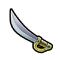

Strategien
Einzigartige Einheit: Der Kosake
Eine leichte Kavallerieeinheit aus der Industriezeit, die die Kavallerie ersetzt
Forschung
Upgraded von
Kosten
Ressourcen
Unterhaltung

Militärwissenschaft
Technologie
Industriezeitalter
Militärwissenschaft
Technologie
Industriezeitalter
Kürassier
(290 10)
340
or
1360
or
680 *
or
1360
or
680 *
10
5
**Wenn Sie nicht genügend Aluminium haben, können Sie Kosaken auch nach der Erforschung "Synthetisches Material" weiter trainieren.
Stärke
Tempo
Sicht
Nachteile
Vorteile
67
5
2
- Verursacht -85% Schaden an Stadtmauern und Stadtverteidigungen
- Ignoriert die Kontrollzone
- +5
in oder neben freundlichen Ländern
- Kann sich nach einem Angriff bewegen
Negative Veränderungen
- Kostet 3% mehr Produktion
- Kostet 7% mehr Gold zum upgraden
Positive Veränderungen
- Benötigt 10 Pferderessourcen von 20 (-50%)
- +5 Stärke
- +5 Stärke in oder neben befreundeten Ländern
- Kann sich nach einem Angriff bewegen
- Dies gilt auch für Plünderungen und Upgrades.
- Das Upgrade kostet 4% weniger
Einzigartiger Distrikt: Lawra
Ein Antikes Spezialgebiet, dass die Heilige Stätte ersetzt.
Forschung
Gelände erforderlich
Gebäude
Produktionskosten
Unterhalt
Astrologie
Technologie
Antike
Alle Felder im Territorium
Schrein
Tempel
Alle Gebetshäuser
27
*
or
108 **
or
54 > **
or
108 **
or
54 > **
1
**Für den Kauf von Bezirken mit Gold muss der Gouverneur Reyna (der Finanzier) mit der Beförderung des Auftragnehmers in der Stadt anwesend sein.
Nachbarschaftsboni
Andere Erträge
Grosse Persönlickeiten
Andere Effekte
- 2 > für jedes angrenzende Naturwunder
- 1 > für jeden angrenzenden Berg
- 1 > für jeden zweiten benachbarten Bezirk
- 1 > for jeden zweiten Wald
Keine
- 2

- 1
- 1
- 1
- Schaltet "Heilige Stätte Gebet" frei
- Neue religiöse Einheiten, die von der Stadt gekauft wurden, erscheinen auf diesem Felder, sofern sie nicht bereits von einer religiösen Einheit besetzt sind
- Religiöse Einheiten können auf oder neben diesem Feld heilen
- Inlandshandelsrouten zu dieser Stadt bieten +1 Essen
- Internationale Handelswege zu dieser Stadt bieten +1
- Benachbarte Felder erhalten +1 Anziehungskraft
- Wenn man eine grosse Persönlickeit in dieser Stadt ausgibt, wird ein kostenloses Geländefeld gratis erworben.
Positive Veränderungen
- -50% Produktionskosten
- 2 Prophetenpunkte, anstatt von 1
- +1 Schriftstellerpunkte
- +1 Künstlerpunkte
- +1 Great Musikerpunkte
- Wenn man eine grosse Persönlickeit in dieser Stadt ausgibt, wird ein kostenloses Geländefeld gratis erworben.
- Hat trotzdem den Limit nach 5 Geländefelder vom Stadtzentrum entfernt.
- Perönlichkeiten mit mehreren Ladungen geben weniger Geländefelder pro Ladung
Gewinnstrategien
Kultur
Herrschaft

Religion
Wissenschaft
9/10
(Ideal)
(Ideal)
7/10
(Gut)
(Gut)
10/10
(Ideal)
(Ideal)
5/10
(Decent)
(Decent)
Kultur ist ein sehr effektiver Siegesweg für Russland. Lawras produzieren absurd viele Persönlickeiten, währenddem man mit Glauben Naturforscher und Rockbands kaufen kann.
Diplomatie ist einer der schwächeren Siegeswege für Russland. Der größte Vorteil ist, dass Russland in der Regel der erste einer Religion ist und eine billige heilige Stätte hat, was bedeutet, dass man Pagoden einfach für diplomatische Gunst bauen kann. Ein Anreiz für den internationalen Handel könnte Ihnen auch dabei helfen, Allianzen zu schließen, aber insgesamt ist Russland in Bezug auf Kultur oder Religion besser.
Herrschaftssiege als Russland sind ziemlich stark. Kosaken sind in der Offensivkriegsführung sehr effektiv und Russlands starker Glaube kann genutzt werden, um das Regierungsgebäude "Großmeisterkapelle" zu kaufen.
Religion ist der beste Siegesweg für Russland und Russland ist einer der besten Zivilisationen für Religionssiege. Lavra-Distrikte können sehr früh und sehr billig gebaut werden und bieten doppelt so viele Punkte Große Prophets-Punkte, damit man schneller zu einer Religion kommt. Die Verwendung des Pantheons „Tanz der Aurora“ in Kombination mit Russlands Fähigkeit kann immense Mengen an Glauben erbringen.